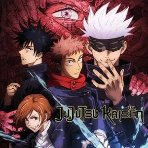

Fan page de Jujutsu Kaisen
Jujutsu Kaisen es un anime basado en el manga de Gege Akutami, que sigue las aventuras de Yuji Itadori mientras enfrenta maldiciones junto a otros hechiceros.
Jujutsu Kaisen es una historia que sigue las aventuras de Yuji Itadori, un joven estudiante que, al ingerir el dedo de una poderosa maldición, se convierte en el anfitrión de Ryomen Sukuna, el rey de las maldiciones. A partir de ese momento, Yuji se une a la Escuela Técnica de Magia Metropolitana de Tokio y empieza su entrenamiento como hechicero jujutsu. Junto a poderosos aliados y bajo la guía del imponente Satoru Gojo, Yuji lucha contra fuerzas oscuras que amenazan la existencia humana.
Jujutsu Kaisen no solo se destaca por su trama y personajes, sino también por las curiosidades y referencias culturales que enriquecen su mundo. Inspirado en el folclore japonés y en figuras icónicas de la cultura pop, el anime mezcla acción, humor y misticismo en un universo lleno de detalles fascinantes. Descubre secretos y datos curiosos sobre las técnicas de maldición, el origen de los personajes y mucho más.
Explora nuestra página y adéntrate en el oscuro y emocionante universo de Jujutsu Kaisen. Aquí podrás conocer más sobre cada personaje, descubrir datos únicos y disfrutar de una historia que combina acción, emoción y el eterno enfrentamiento entre la luz y la oscuridad.